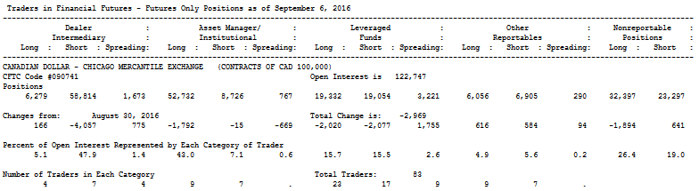
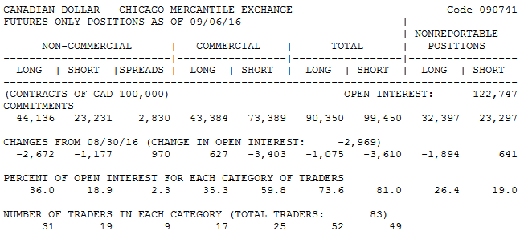

<!DOCTYPE html>
<html>
</html>
<head>
  <meta charset="utf-8">
  <meta http-equiv="X-UA-Compatible" content="IE=edge">
  <title>外汇站（fx-z.com） - 交易者持仓报告</title>
  <meta name="description" content="">
  <meta name="viewport" content="width=device-width, initial-scale=1">
  <meta name="robots" content="all,follow">
  <!-- Bootstrap CSS-->
  <link rel="stylesheet" href="vendor/bootstrap/css/bootstrap.min.css">
  <!-- Font Awesome CSS-->
  <link rel="stylesheet" href="vendor/font-awesome/css/font-awesome.min.css">
  <!-- Google fonts - Roboto-->
  <link rel="stylesheet" href="https://fonts.googleapis.com/css?family=Roboto:400,300,700,400italic">
  <!-- owl carousel-->
  <link rel="stylesheet" href="vendor/owl.carousel/assets/owl.carousel.css">
  <link rel="stylesheet" href="vendor/owl.carousel/assets/owl.theme.default.css">
  <!-- theme stylesheet-->
  <link rel="stylesheet" href="css/style.default.css" id="theme-stylesheet">
  <!-- Custom stylesheet - for your changes-->
  <link rel="stylesheet" href="css/custom.css">
  <!-- Favicon-->
  <link rel="shortcut icon" href="img/favicon.png">
  <!-- Tweaks for older IEs--><!--[if lt IE 9]>
    <script src="https://oss.maxcdn.com/html5shiv/3.7.3/html5shiv.min.js"></script>
    <script src="https://oss.maxcdn.com/respond/1.4.2/respond.min.js"></script><![endif]-->
</head>
<body>
  <div id="all">
    <div class="container-fluid">
      <div class="row row-offcanvas row-offcanvas-left"> 
        <!--   *** SIDEBAR ***-->
        <div id="sidebar" class="col-md-4 col-lg-3 sidebar-offcanvas">
          <div class="sidebar-content">
            <h1 class="sidebar-heading"> <a href="https://fx-z.com">fx-z.com</a></h1>
            <p class="sidebar-p">介绍外汇相关的基本知识，告诉您如何进行自己的技术面和基本面分析，讲解先进的交易理念，并且为您阐述失败交易者与专业交易者之间的真正区别。 </p>
            <p class="sidebar-p">通过这些课程的学习，您将学会如何根据自己的优势来应用情绪分析，还将了解真实世界的事件会对货币汇率产生什么影响，央行在外汇市场中所发挥的作用，以及交易者在颇受欢迎的即期外汇交易中有哪些选择方案。 </p>
            <ul class="sidebar-menu">
                <!-- Link-->
                <li class="sidebar-item"><a href="https://fx-z.com" class="sidebar-link">首页</a></li>
                <!-- Link-->
                <li class="sidebar-item"><a href="cihui.html" class="sidebar-link">外汇词汇</a></li>
                <!-- Link-->
                <li class="sidebar-item"><a href="ebook.html" class="sidebar-link">获取外汇电子书</a></li>
            </ul>
            <p class="social"><a href="https://www.forextimechina.com.cn/zh?form=IZIN" target="_blank"data-animate-hover="pulse" class="external facebook"><i class="fa fa-eur"></i></a><a href="https://www.forextimechina.com.cn/zh?form=IZIN" target="_blank" data-animate-hover="pulse" class="external gplus"><i class="fa fa-gbp"></i></a><a href="https://www.forextimechina.com.cn/zh?form=IZIN" target="_blank" data-animate-hover="pulse" class="external twitter"><i class="fa fa-rmb"></i></a><a href="https://www.forextimechina.com.cn/zh?form=IZIN" target="_blank" title="" class="external instagram"><i class="fa fa-dollar"></i></a><a href="https://www.forextimechina.com.cn/zh?form=IZIN" target="_blank" data-animate-hover="pulse" class="email"><i class="fa fa-money"></i></a></p>
            <div class="copyright text-center text-md-left">
             
              
            </div>
          </div>
        </div>
        <!--   *** SIDEBAR END ***  -->
        <!--   *** DETAIL ***-->
        <div class="col-md-8 col-lg-9 content-column white-background">
          <div class="small-navbar d-flex d-md-none">
            <button type="button" data-toggle="offcanvas" class="btn btn-outline-primary"> <i class="fa fa-align-left mr-2"></i>菜单</button>
            <h1 class="small-navbar-heading"> <a href="https://fx-z.com/13-3.html">下一篇 </a></h1>
          </div>
          <div class="row">
            <div class="col-xl-10">
              <div class="content-column-content">
                <h1>交易者持仓报告</h1>
   <p>
    除节假日以外的每周五，美国一家政府机构商品期货交易委员会（CFTC）公布一份关于多种货币、商品和利率期货的交易者持仓报告（COT）。该报告显示了截至上周二，不同交易者的显著持仓量。
</p>
<p>
    交易货币包括所有主要货币（欧元、英镑、日元等）以及一些次要货币（巴西雷利尔、墨西哥比索、俄罗斯卢布等）。
</p>
<p>
    COT 报告是外汇市场中唯一面向公众的持仓信息，因为外汇主导行业——银行间即期市场主要由私有交易构成并且不对任何政府机构公布。（有些央行定期从大型银行收集数据，但从不对外公布。）
</p>
<p>
    虽然每日 5 万亿美元的期货成交量仅占据即期外汇交易的九牛一毛，COT 报告提供的持仓见解是非常少见和宝贵的。如果在芝加哥商品交易所（CME）占比 X 的交易者做多一种货币，按照逻辑推理，即期市场中的交易者也可能采用相似的头寸。如果 CME 的头寸得以延续（超买或超卖），则整体交易市场的头寸也可能得以延续。有些分析师研究七种主要货币（EUR、JPY、GBP、CAD、AUD、CHF、NZD）的美元等价持仓量，以衡量市场对美元的整体情绪。
</p>
<p>
    选择正确的报告
</p>
<p>
    CFTC 发布的 COT 报告有两种版本，一种是侧重外汇分析师的“传统”版，另一种是于 2009 年 9 月开始发布的新版。传统版本将 CMF 外汇期货交易商分为商业型和非商业型两种；其中，商业型被解读为套期保值者，非商业型被解读为投机商。
</p>
<p>
    除了芝加哥商品交易所以外，新版本还添加了许多其他市场以及非期货衍生品合约。它将交易商分为交易商/中间商、资产管理商/机构、杠杆基金以及其他可报告交易商和非报告交易商。与传统版一样，它也仅提供每种货币的期货头寸。以下为新版报告示例：
</p>
<p>
     针对仅持有加元期货头寸的 COT 分类报告
</p>
<p>
    当新版报告首次出炉时，分析师认为这将是一次提升。通常，新版报告的前两种交易商使用外汇头寸作为对冲，因此其当前持仓信息不如投机头寸的当前仓位信息丰富；这些投机头寸是指“资金管理者”和“其他可报告交易商”的头寸，与传统的非商业型交易商相似。不过，许多分析师仍未抛弃传统版本。他们相信分类并不能改善分析。他们认为最好是关注非商业交易商的整体表现，而不是关注分类以及整合那些原本可以作为一个整体使用的两种数据。
</p>
<p>
    传统 CFTC 报告
</p>
<p>
    将 COT 报告纳入您的交易计划可能不是一项省心之举，因为报告本身的设计体验不佳，且不易于用户使用。CFTC 为每种商品的多项交易提供一份详细的表格和一份简短的表格，期货、期权交易分类和单独的期货交易分类，以及其他复杂性内容。搜寻货币之前，您可能已迷失于牛奶和奶酪合约。
</p>
<p>
    为了了解外汇 COT 报告示例，您可以参考以下图表。图内货币与上述报告中的货币相同。
</p>
<p>
     针对仅持有加元 CME 期货头寸的 COT 传统报告
</p>
<p>
    许多由软件包和网站提供的 COT 数据（包括图表格式）经过重新编排，以便其数据更加简单易懂。第一本关于如何利用 COT 报告来获取优势的书籍作者 Larry Williams 也是这样操作。您还应该将数据下载至电子表格并制定自己的图表。大多数软件的图表都会显示商业型交易商与投机商，因为他们会不时加仓或建仓。当他们其中一方改变方向时，您经常可以见到价格转折点。
</p>
<p>
    如果您使用图表表格，请牢记它采用的是每周数据，因此请将您的数据周期设为一周。
</p>
<p>
    除了用户体验不佳以外，COT 报告的另一项缺点是，当您拿到数据时，它几乎已经滞后一周。报告包含的数据于每周二搜集；如果周三和周四出现了重大的价格变动，则当您于周五拿到报告时，其数据已经过时且不具指导性。
</p>
<p>
    理解 CFTC 术语
</p>
<p>
    CFTC 在其解释性说明中将头寸数据细分为持仓头寸、可报告头寸、商业与非商业交易商以及非报告头寸。以下快速指南有助于您了解这些较为陌生的术语：
</p>
<p>
    持仓头寸：“它是指所有已经建仓，但还未通过交易、交割、执行而冲销的期货和/或期权合约”。在期货中，每份买入的合约背后都有一位卖家。因此，“多头头寸的持仓总和等于空头头寸的持仓总和。”严格地说，即期市场也是如此——对于每笔 100 万美元的空头，它相应的有一位 100 万美元的买家和 100 万美元的卖家，但我们不清楚他们究竟是谁（是银行持仓者还是企业对冲者）以及他们会持仓多久。卖方可能已经空仓，而买方正在加仓。
</p>
<p>
    可报告头寸：“清算银行、期货佣金商和国外经纪商（统称为报告公司）每日向委员会（Commission）提交报告。这些报告显示交易商超过 CFTC 规定数量的期货和期权头寸数量。如果每日市场收盘时，报告公司的交易商在单个期货月或期权有效期内的头寸达到或超过委员会的规定数量，则无论交易商的持仓量有多少，报告公司将汇报交易商对该商品持有的所有期货和期权有效期内的全部头寸。对委员会报告的交易商持仓量通常占指定市场中持仓头寸总量的 70% 至 90%。”
</p>
<p>
    商业和非商业交易商：:“在提供给委员会的报告中，可报告交易商被归类为“商业型”和“非商业型”。如果按照 CFTC 规则 1.3（z）所述，交易商使用商品期货合约作为对冲手段，则它报告的所有该商品期货头寸均被归类为商业型：“……为了确保能准确、一致地对交易商分类，如果有关于交易者如何利用市场的额外信息，委员会成员可能会对交易商进行重新分类。”
</p>
<p>
    换言之，被分类为商业型或投机型的是交易商，而不是交易本身。因此，高盛等大型市场参与者申请（并且已经是）成为商业型，尽管它显然有许多投机型交易。那些被指定为“商业型”的交易商通常可以从经纪商那儿获得更高的杠杆。
</p>
<p>
    <strong>非报告头寸：</strong>“非报告头寸的多头和空头持仓头寸”是指总持仓头寸减去可报告头寸的总多头头寸和总空头头寸。相应地，参与非报告头寸的交易商数量以及每位交易商隶属于商业型还是非商业型都是未知的。最关键的是，非报告头寸仅占据很小的市场份额，其持仓量很小且无法引起市场波动。不过，您可能注意到，非报告头寸的规模可能接近传统版报告中“杠杆基金”的规模。
</p>
<p>
    <strong>商业型交易商与投机商：</strong>对于指定货币的非商业头寸，交易者关注多头头寸与空头头寸之间的净合约持仓量。如果非商业交易商的欧元多头合约为 113,000 份，欧元空头合约为 60,000 份，则其净头寸量为 +53,000 份欧元多头合约。这种情况下，一份合约为 125,000 欧元，因此 CFTC 的投机团体持有的欧元多头头寸价值 6,625,000,000 欧元。
</p>
<p>
    交易商往往对七种主要货币（日元，欧元，瑞士法郎，英镑，澳元，新西兰元和加元）既进行单独研究，又进行整体研究。
</p>
<p>
    如果一种主要货币有 100,000 份净多头或净空头头寸，这通常被认为是延续信号。同样，如果六种主要货币全部显示非商业型账户持有可观的净多头货币头寸（说明他们做空美元），这可能是一项示警信号。
</p>
<p>
    示例：2013 年底，CFTC 截至 12 月 24 日的头寸数据显示投机账户（非商业型）持有 143,822 份日元净空头合约，是自 2007 年 7 月以来的最大规模。12 月 24 日，USD/JPY 收盘于 104.25。一周后，货币对达到顶点 105.41，此时出现了一些获利了结操作，令日元净空头头寸小幅下跌至 135,288 份合约，但日元仍然处于超卖状态。截至 2 月 4 日，USD/JPY 跌至 100.76，日元净空头头寸已减少至 76,829 份合约。如果交易者认为 12 月底将延续日元空头头寸，他会决定逆向操作并卖出 USD/JPY 或 EUR/JPY。
</p>
<p>
    <strong>您应该跟随商业型交易商操作吗？</strong>
</p>
<p>
    根据传统的交易经验，COT 的使用方法是“跟随商业型交易商”。对于外汇市场来说，这并非总是至理名言。
</p>
<p>
    商业型交易商究竟是谁呢？严格地说，他们是持有与核心业务相关货币头寸的企业。他们并不喜欢做多外汇头寸。如果您是一位面向墨西哥市场的小工具制造商。进口商用比索向您付款。为了保障您的收入来源，您希望一旦知悉订单规模就立刻在期货市场中卖出比索。实际上，在您为进口商提供产品的比索报价前，您或许已经查询过付款日的期货价格。当您设置好卖出比索的定单，您不再关心比索的价格走向。如果它下跌，您售出的期货能保障您拿到固定价格。如果它上涨，您可能会亏损，但现金安全无虞。商业型交易商的盈利途径不是交易货币，而是买卖小工具。公平地说，如果外汇市场中的一些商业型交易商发现重大的上涨趋势，他们会通过回补（买回）来退出比索空头合约，但通过货币来提高利润率并非他们的核心业务。
</p>
<p>
    外汇行业中的大型投机商为趋势跟随者。许多小型投机商亦是如此。他们是谁？大多数情况下是商品基金管理者以及一些大型银行和经纪商。您可能认为您应该跟随资金管理者，但请记住，趋势跟随者通常会错过转折点。重要的是要发现商业型交易商或投机商的头寸何时大于近期数据，此时，专业人士认为走势已经“延伸”或耗尽。这通常（即使不是惯例）预示着转折点即将出现。
</p>
<p>
    <strong>为何关注投机商头寸?</strong>
</p>
<p>
    即使交易者就职于一家大型银行并且见到可观的客户流，这些数据仍不足以帮助他评估一种货币中当前头寸的规模。市场执行一笔大额欧元卖出定单并不一定代表市场参与者整体看空欧元。或许市场参与者曾大量做多欧元，但目前已经平仓。由于客户流数据可能具有欺骗性，而且许多市场参与者无法获得这些数据，交易者会寻找任何有助于他们了解市场倾向的方法。因此，他们喜欢关注 CFTC 的持仓数据以及由东京金融交易所发布的报告。
</p>
<p>
    创建外汇头寸之前，交易者应该对市场持仓量具有一定的了解，因为这不仅能让他了解其他市场参与者对于指定货币走向的看法，还能让他知悉市场参与者对这些走向的信任程度。持仓量知识有助于交易者更好地决定何时创建多头或空头货币头寸。
</p>
<p>
    <strong>专业建议：外汇交易者倾向于关注可报告头寸，然后关注非商业型头寸，因为这些头寸具有投机性质，与作为标的商品头寸对冲手段的商业型头寸相反。</strong>
</p>
<p>
    <br/>
</p>
<p>
    <br/>
</p>
              </div>
            </div>
          </div>
        </div>
      </div>
    </div>
  </div>
  <!-- JavaScript files-->
  <script src="vendor/jquery/jquery.min.js"></script>
  <script src="vendor/popper.js/umd/popper.min.js"> </script>
  <script src="vendor/bootstrap/js/bootstrap.min.js"></script>
  <script src="vendor/jquery.cookie/jquery.cookie.js"> </script>
  <script src="vendor/owl.carousel/owl.carousel.min.js"></script>
  <script src="vendor/masonry-layout/masonry.pkgd.min.js"></script>
  <script src="js/front.js"></script>
</body>